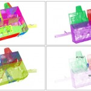

Presentations
February 2016: Ulrich Krispel presented the DURAARK project and the geometric enrichment pipeline at the VISIGRAPP conference 2016 in the European Project Space track in Rome, Italy.
August 2015: Sebastian Ochmann presented methods for efficient access copy generation from 3D point clouds of buildings at the annual CAD/Graphics conference in Xi’an, China. The presentation slides are available here.
March 2015: Michael Panitz presented the DURAARK project and preservation planning of three dimensional architectural data at the 19th AUdS¬†(“Archivierung von Unterlagen aus Digitalen Systemen”)¬†conference in Vienna, Austria.
November 2014: DURAARK orgainzed the Sustatinable Building Information Workshop for stakeholders from institutional building owners, archives and FM related software developers in Copenhagen, Denmark. Presentations were held by Martin Tamke, Jacob Beetz, Michelle Lindlar, Richard Vock, Dag Fjeld Edvardsen and Thomas Krijnen.
November 2014: Martin Tamke presented DURAARK at GeoBIM in Amsterdam, Netherlands.
November 2014: DURAARK poster presentation “Curating and Preserving Architectural 3D Data – Meeting Stakeholder Needs Along and Past a Building¬¥s Lifecycle”¬†at the 2nd Data Management Workshop in Cologne, Germany.
October 2014: DURAARK was represented at ISWC 2014, the 13th International Semantic Web Conference, the premier Semantic Web Conference in Riva del Garda, Italy. L3S researchers presented research work regarding Semantic Enrichment of IFC files.
The poster titled, “Extracting Architectural Patterns from Web Data” went on to win the BEST POSTER award.
October 2014: Michelle Lindlar presented DURAARK Project and questions regarding PREMIS implementation in DURAARK Workbench and contribution af use cases for upcoming PREMIS v3, at PREMIS Implementation Fair in Melbourne, Australia.
October 2014: Michelle Lindlar held the presentation “Building Information Modeling – A Game Changer for Interoperability and a Chance forDigital Preservation of Architectural Data?” 11th International Conference on Digital Preservation (iPRES 2014) in Melbourne, Australia.
September 2014: On the annual i-KNOW Conference in Graz, Austria, a special workshop track,¬†“Buildning Knowledge”, was initiated by the DURAARK team.
Together with co-organizers from other projects the workshop was set up as a full day workshop in parallel to others prior to the main conference.The workshop had 14 participants and 8 presentations served as the intitial input to the lively discussions about bringing different buiding-related data models, ontologies, structured vocabularies and other data sets together and aligning them with each others. As a main outcome new and reinforced relations between the DURAARK project and related initiatives and projects regarding the sustainable use of semantically rich and interlinked models of the built environment have been established. 
September 2014: Michael Panitz presented “Digital preservation of architectural 3D data” on IGeLU 2014, Annual conference of the International Group of exLibris Users in Oxford, UK.
September 2014: Michelle Lindlar presented The DURAARK Project – Long-term Preservation of Architectural 3D-Data on CIDOC 2014, Annual conference of the Internation Committee for Documentation / the International Council of Museums in Dresden, Germany.
September 2014: Devinder Thapa presented “Preservation of 3D objects of buidings” on the joint SCAPE and APARSEN workshop at the TPDL Conference in London, UK.
September 2014: A DURAARK poster presentation was held at Digital Specimen in Berlin, Germany.
September 2014: A presentation of DURAARK and digital preservation of 3D research data was held on the 7th Wildauer Library Symposium in Wildau, Germany.
September 2014:¬†Stefan Dietze presented a¬†keynote speach “Turning Data into Knowledge ‚Äì profiling and interlinking Web datasets” at the 5th Inernational Conference on Knowledge Engineering and Semantic Web (KESW2014) i Kazan, Russia.
June 2014: TIB gave a short introduction to the DURAARK project as part of the general TIB digital preservation presentation at Rosetta Advisory Group meeting in Jerusalem, Israel.
June 2014: Michael Panitz held a short lightning talk and presentation wall with general DURAARK poster and flyers at Nestor Praktikertag (German Competence Network for Digital Preservation) in Hannover, Germany.
May 2014: Michelle Lindlar held the presentation “A Domain-driven Approach to Digital Curation and Preservation of 3D Architectural Data - Stakeholder Identification and Alignment in the DURAARK project” at Archiving 2014 in Berlin, Germany.
May 2014: DURAARK members co-organized LDAC 2014, Linked Data in Architecture and Construction Workshop in Helsinki, Finland.
The DURAARK consortium contributed to the planning and execution and the projects preliminary results and future plans where prominently placed, presented and discussed among a strong field of experts from the field of AEC/FM as well as Linked Data. As a tangible result a special issue of the renowed journal “Automation in Construction” was initiated that is due to appear in 2015.
May 2014: Michelle Lindlar presented “Quality criteria for architectural 3D data in usage and preservation processes at QQML2014, the 6th International Conference on Qualitative and Quantitative Methods in Libraries, in Istanbul, Turkey.
May 2014: Stefan Dietze participated at KEYSTONE Working Groups meeting in Hersonissos, Crete, Greece with his presentation “From data to knowledge – profiling and interlinking web datasets”.
Stefan Dietze´s presentation (pdf)
May 2014: Besnik Fetahu presented “A Scalable Approach for Efficiently Generating Structured Dataset Topic Profiles” at ESWC 2014 in Anissaras, Creete, Greece.
April 2014: Sebastian¬†Ochmann presented the¬†paper “Towards the extraction of Hierarchical Building Descriptions from 3D Indoor Scans” at EUROGRAPHICS 3DOR in Strasbourg, France.
March 2014: Stefan Dietze presented “What¬¥s all the data about – profiling and linking of Web datasets” at LIRRM in Montpellier, France.
March 2014: The DURAARK approach of archiving vocabularies such as the buildingSMART Data Dictionary as RDF datasets in a Semantic Digital Archive (SDA) has been presented to the bSDD working group at the Stockholm International buildingSMART meeting.
March 2014: Michelle Lindlar and Hedda Saemann held a presentation wall with general DURAARK poster and flyers and a short article in the conference report “Das EU Projekt DURAARK ‚Äì Forschung zur langfristigen Aufbewahrung von 3D Daten aus der Architektur” at Oldenburger Bautage 2014 in Oldenburg, Germany.
January 2014:¬†Sebastian Ochmann presented the paper “Automatic Generation of Structural Building¬†Descriptions from 3D Point Cloud Scans” on the 9th International Conference on Computer Graphics Theory and Applications (GRAPP 2014) in Lisbon, Portugal.
This talk presents the results of the paper “Automatic Generation of Structural Building Descriptions from 3D Point Cloud Scans”. The presentation was held at the GRAPP 2014 conference. The proposed method provides a semantically meaningful segmentation of indoor point clouds into rooms as well as a detection of openings between them. This enables easier navigation within even large point cloud datasets and an automated analysis of the measured building on a higher semantic level.¬†
November 2013: Moutaz Haddara presented the paper “Long Term Presentation of 3D Architectural Building Data: A Literature Review” in the NOKOBIT (Norsk konferanse for organisasjones bruk av IT) 2013, Stavanger, Norway.
The paper presents the literature review on long term preservation of 3D architectural building data. The review identified the existing gap in the research and practice of the long term preservation of 3D architectural models, and suggested future research opportunities in this domain.
October 2013:¬†Jakob Beetz presented “Applications of IT in AEC“, a DURAARK presentation on CIB W78 conference in Beijing, China.
This presentation was held on the annual CIB W78 conference for ‘Applications of IT in the AEC industry’. In the presentation a general introduction to the DURAARK project and the topic of Long Term Preservation is provided and some basic approaches of the DURAARK project are introduced.
October 2013:¬†A “Long-term Preservation Day”, a one-day seminar, was arranged for the National Archives of Sweden and the National Library of Sweden, Stockholm, Sweden.
The seminar was arranged at the Swedish National Library by the LDP Centre (LTU) where the DURAARK project was presented. Participants were people from the Library and the National Archives of Sweden.
October 2013: DURAARK presentation at DEDICATE final seminar, Glasgow, Scotland.
This¬†talk introduces the basic digital preservation principles adressed in the project.¬†It was¬†presentated at the final¬†workshop of the¬†‘DEDICATE’ (DEsign’s DIgital Curation for ArchiTEcture)¬†project at the University of Glasgow in October of 2013. The seminar brought together experts from different¬†domains and covered a wide range of topics, including the cultural¬†change connected¬†to use of Built Environment¬†related data¬†as well as the requirement for a a common technological framework. In this context, the DURAARK presentation¬†highlighted the project’s¬†research at bitstream, logical and semantic preservation levels.
September 2013:¬†This slideset presents works in paper “Towards Preservation of semantically enriched Architectural¬†Knowledge” held at the 3rd International Workshop on Semantic Digital Archives (SDA)¬†in conjunction with the 17th Int. Conference on Theory and Practice of¬†Digital Libraries (TPDL) in Valetta, Malta.
The presentation introduces the overall vision of semantically enriched building model archives and arising challenges. Enrichment is targeting specifically enrichment with Linked Data providing information about the context, legal environment, history or geographical location of buildings to guide architects and urban planners. Challenges arise particularly with respect to evolution of distributed Web data, requiring scalable and targeted preservation strategies.
April 2013: Presentation of the DURAARK project at Ex Libris conference, Berlin, Germany.
‘Digitale Langzeitarchivierung an Hochschulen’ (Digital Preservation at Universities) was a one-day event co-organized by the University Library of the Humboldt-University of Berlin and the library solution provider Ex Libris. The event targeted professionals from the library and university data center domain as well as researchers interested in digital preservation solutions. The talk introduces some research questions associated with the digital preservation of 3D objects and presents the planned tangible outcomes and goals of the DURAARK project.

{kind=link}
{kind=link}
{kind=link}
{kind=link}